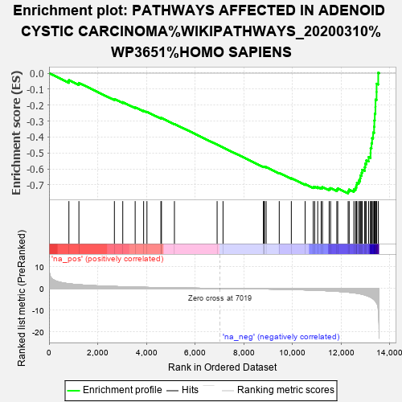
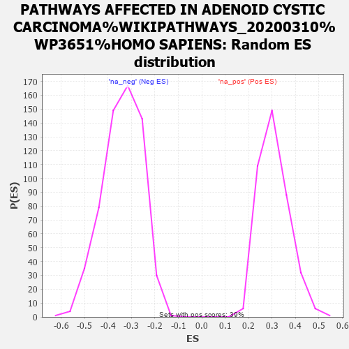

| | | Dataset | rank |
| Phenotype | NoPhenotypeAvailable |
| Upregulated in class | na_neg |
| GeneSet | PATHWAYS AFFECTED IN ADENOID CYSTIC CARCINOMA%WIKIPATHWAYS_20200310%WP3651%HOMO SAPIENS |
| Enrichment Score (ES) | -0.75337833 |
| Normalized Enrichment Score (NES) | -2.2193034 |
| Nominal p-value | 0.0 |
| FDR q-value | 0.0 |
| FWER p-Value | 0.0 |
Table: GSEA Results Summary

Fig 1: Enrichment plot: PATHWAYS AFFECTED IN ADENOID CYSTIC CARCINOMA%WIKIPATHWAYS_20200310%WP3651%HOMO SAPIENS
Profile of the Running ES Score & Positions of GeneSet Members on the Rank Ordered List
| PROBE | GENE SYMBOL | GENE_TITLE | RANK IN GENE LIST | RANK METRIC SCORE | RUNNING ES | CORE ENRICHMENT | | 1 | SMARCE1 | | | 817 | 2.136 | -0.0440 | No |
| 2 | MORF4L1 | | | 1228 | 1.712 | -0.0611 | No |
| 3 | FOXP2 | | | 2687 | 0.899 | -0.1621 | No |
| 4 | CHEK1 | | | 3031 | 0.777 | -0.1815 | No |
| 5 | MAGI2 | | | 3541 | 0.614 | -0.2144 | No |
| 6 | CMTR2 | | | 3889 | 0.521 | -0.2361 | No |
| 7 | HRAS | | | 4025 | 0.489 | -0.2423 | No |
| 8 | TLK1 | | | 4599 | 0.356 | -0.2820 | No |
| 9 | CHEK2 | | | 4622 | 0.352 | -0.2809 | No |
| 10 | TP53 | | | 5155 | 0.255 | -0.3183 | No |
| 11 | PIK3CA | | | 6910 | 0.011 | -0.4480 | No |
| 12 | RAF1 | | | 7153 | -0.017 | -0.4658 | No |
| 13 | PTEN | | | 8813 | -0.242 | -0.5867 | No |
| 14 | FBXW7 | | | 8847 | -0.249 | -0.5872 | No |
| 15 | ARID4B | | | 8852 | -0.250 | -0.5856 | No |
| 16 | KDM6A | | | 8925 | -0.264 | -0.5889 | No |
| 17 | ARID5B | | | 9464 | -0.375 | -0.6258 | No |
| 18 | MAX | | | 9961 | -0.503 | -0.6587 | No |
| 19 | AKT1 | | | 10528 | -0.671 | -0.6954 | No |
| 20 | BCOR | | | 10862 | -0.801 | -0.7138 | No |
| 21 | BRCA1 | | | 10921 | -0.826 | -0.7118 | No |
| 22 | SMARCA2 | | | 11046 | -0.879 | -0.7142 | No |
| 23 | CEBPA | | | 11188 | -0.943 | -0.7173 | No |
| 24 | ERBB2 | | | 11241 | -0.973 | -0.7137 | No |
| 25 | IL17RD | | | 11516 | -1.121 | -0.7253 | No |
| 26 | NFIB | | | 11574 | -1.150 | -0.7207 | No |
| 27 | JMJD1C | | | 11832 | -1.320 | -0.7295 | No |
| 28 | KAT6A | | | 11869 | -1.348 | -0.7218 | No |
| 29 | FGFR4 | | | 12297 | -1.730 | -0.7400 | Yes |
| 30 | MYC | | | 12339 | -1.776 | -0.7294 | Yes |
| 31 | MYBL1 | | | 12532 | -2.018 | -0.7280 | Yes |
| 32 | MAP2K2 | | | 12602 | -2.124 | -0.7168 | Yes |
| 33 | SMC1A | | | 12636 | -2.192 | -0.7023 | Yes |
| 34 | ATRX | | | 12657 | -2.223 | -0.6867 | Yes |
| 35 | CTBP1 | | | 12734 | -2.348 | -0.6742 | Yes |
| 36 | MYB | | | 12788 | -2.474 | -0.6591 | Yes |
| 37 | KANSL1 | | | 12802 | -2.503 | -0.6407 | Yes |
| 38 | BRD1 | | | 12850 | -2.589 | -0.6243 | Yes |
| 39 | BCORL1 | | | 12874 | -2.653 | -0.6055 | Yes |
| 40 | ATM | | | 12976 | -2.982 | -0.5900 | Yes |
| 41 | MAML3 | | | 12998 | -3.059 | -0.5680 | Yes |
| 42 | MGA | | | 13044 | -3.222 | -0.5465 | Yes |
| 43 | SETD2 | | | 13139 | -3.615 | -0.5256 | Yes |
| 44 | UHRF1 | | | 13218 | -4.028 | -0.5003 | Yes |
| 45 | MAGI1 | | | 13221 | -4.033 | -0.4694 | Yes |
| 46 | FOXO3 | | | 13257 | -4.271 | -0.4391 | Yes |
| 47 | NOTCH1 | | | 13281 | -4.460 | -0.4064 | Yes |
| 48 | NCOR1 | | | 13323 | -4.769 | -0.3727 | Yes |
| 49 | NSD1 | | | 13364 | -5.165 | -0.3358 | Yes |
| 50 | KDM6B | | | 13374 | -5.280 | -0.2958 | Yes |
| 51 | CREBBP | | | 13392 | -5.507 | -0.2546 | Yes |
| 52 | SRCAP | | | 13418 | -5.867 | -0.2112 | Yes |
| 53 | PRKDC | | | 13422 | -5.877 | -0.1662 | Yes |
| 54 | EP300 | | | 13465 | -6.677 | -0.1178 | Yes |
| 55 | ARID1A | | | 13467 | -6.703 | -0.0662 | Yes |
| 56 | KMT2C | | | 13534 | -9.554 | 0.0025 | Yes |
Table: GSEA details [plain text format]

Fig 2: PATHWAYS AFFECTED IN ADENOID CYSTIC CARCINOMA%WIKIPATHWAYS_20200310%WP3651%HOMO SAPIENS: Random ES distribution
Gene set null distribution of ES for PATHWAYS AFFECTED IN ADENOID CYSTIC CARCINOMA%WIKIPATHWAYS_20200310%WP3651%HOMO SAPIENS